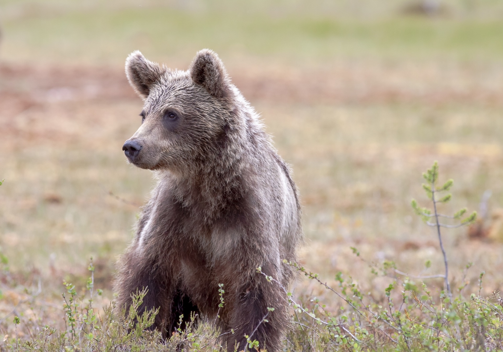
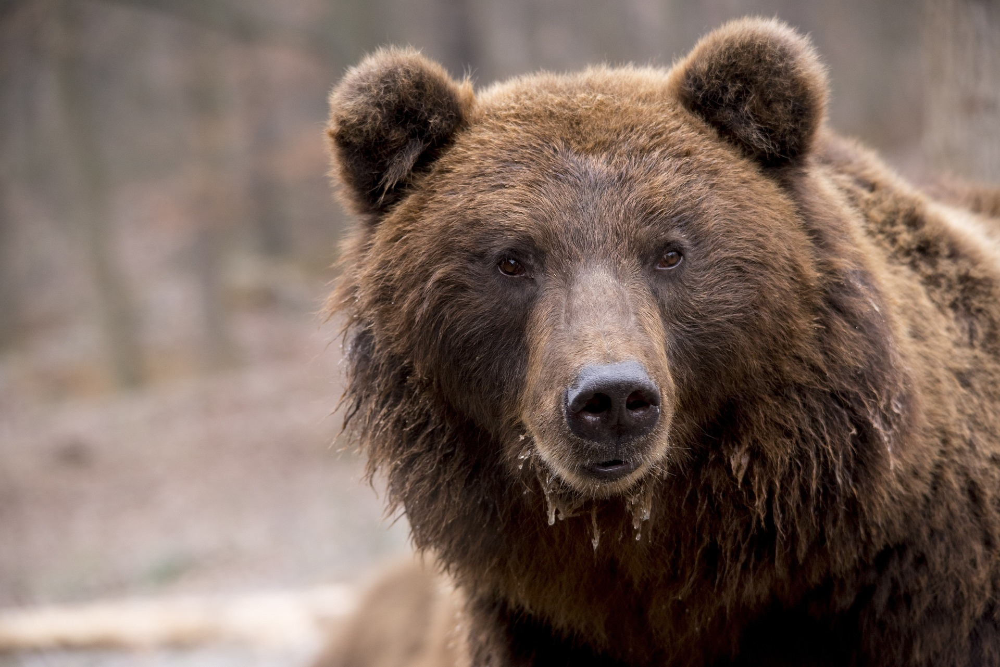

 (1).jpg)
Ayılar veya Ayıgiller, Ursidae familyasının etçil memelileridir. Ayılar Köpeğimsiler veya köpek benzeri etoburlar olarak sınıflandırılır. Her ne kadar sadece sekiz ayı türü mevcut olsa da, Kuzey yarımkürede ve kısmen Güney yarımkürede çok çeşitli habitatlarda görülürler. Ayılar, Kuzey Amerika, Güney Amerika, Avrupa ve Asya kıtalarında yaşarlar. Modern ayıların ortak özellikleri arasında, tıknaz bacaklı büyük gövdeleri, uzun burunları, küçük yuvarlak kulakları, tüylü saçları ve kısa kuyrukları bulunur. Kutup ayısı çoğunlukla etobur olmakla birlikte, dev panda neredeyse tamamen bambudan beslenir. Kalan altı tür, çeşitli diyetlerle her yerde hepçildir. Flört bireyleri hariç, ayılar tipik olarak yalnız hayvanlardır. Gündüzcül ya da gececil olabilirler ve gelişmiş bir koku alma duyusuna sahiptirler. Ağır yapılı ve garip yürüyüşlerine rağmen, oldukça usta koşucu, dağcı ve yüzücülerdir. Ayılar, mağara ve kütük gibi barınakları, inleri olarak kullanırlar; türlerin çoğu, kış aylarında 100 gün kadar bir sürede kış uykusunda kalırlar. Ayılar, etleri ve kürkleri için tarihöncesi zamanlardan beri insanlar tarafından avlanırlar; ayı kızdırma ve dans ettirme gibi diğer eğlence biçimleri için de kullanılmışlardır. Güçlü fiziksel varlığıyla, çeşitli insan toplumlarının sanat, mitoloji ve diğer kültürel yönlerinde önemli bir rol oynarlar. Modern zamanlarda ayılar, yaşam alanlarına tecavüz ve Asya safra ayısı pazarı da dahil olmak üzere, yasa dışı ticaret yoluyla baskı altına girmiştir. IUCN, altı ayı türünü savunmasız veya nesli tükenme tehlikesi altında olarak listelemiştir ve boz ayı gibi, asgari endişe verici türlerin bile bazı ülkelerde yok olma riski altında olduğunu gösterir. En çok tehdit altında olan bu nüfusun, kaçak avlanması ve uluslararası ticareti yasaktır, ancak hala devam etmektedir.